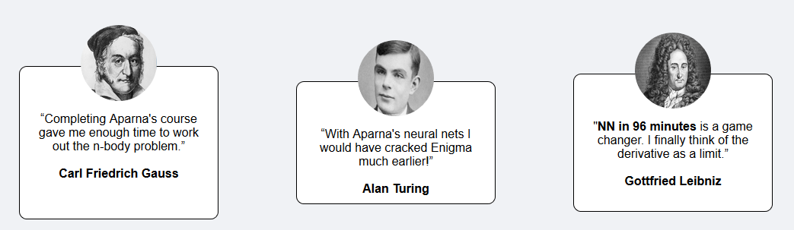

Build your own neural network in 96 mins
Course Outline
Who will benefit from this course ?
This series of 8 videos - which add to a total of 96 minutes in length- is for anyone who wants to seriously understand the inner workings of neural networks without being overwhelmed by mathematical notation and unreasonable prerequisites in computer science competencies.
The course slowly develops the main ideas and implements them in python code right away; I believe in learning by coding. I do not take shortcuts when it comes to concepts and mathematical details but yet assume that you do not know much more than high school math and basic statistical intuition. Only our dive into python does assume a prior familiarity with programming in general and python in particular. I feel that there is an abundance of great resources to learn coding, which I would not want to replicate.
This course is open to anyone!
Word on the street

Explain the structure to me
1. Introduction and Motivation
In part 1, I initially set the stage (1) by introducing the building blocks of classifiers, in particular Boolean logic, thresholds and activation functions, leading to the sigmoid function with multiple inputs as a highly simplified model of a neuron. I then combine many of these sigmoidal units (“nodes”) into a network consisting of muliple “layers”.
2. Forward Propagation
After this high level motivation, the second part begins with an (optional) review of matrix multiplication (2.1), followed by the basic mechanism of information flow (forward propagation) in a tiny neural network consisting of just 2 layers, each with 2 nodes (2.2).
The \(2 \times 2\) network is small enough to compute forward propagation “by hand”. I then use a slightly larger network of 3 layers,3 nodes (2.3) to introduce matrix multiplications as a convenient way to scale up these tedious operations.
I conclude the second part by implementing our first neural network code in python (@ref(NN_python)).
3. Backward Propagation
The third part tackles the more challenging idea of “training” a neural network by updating its weights. I apply gradient descent on the weights in each layer sucdessively, starting with the last and working our way backwards to the first. This process is called back propagation (3). I thoroughly explain (3.1) how the errors in a node in layer \(j\) are being distributed “back to” the nodes in the previous layer \(j-1\). The third part ends with a matrix view of back propagation (3.2).
The following two chapters are “extras”, not included in the 96 minutes.
4. Case Study: MNIST
MNIST (“Modified National Institute of Standards and Technology”) is the de facto “hello world” dataset of computer vision. Since its release in 1999, this classic dataset of handwritten images has served as the basis for benchmarking classification algorithms. As new machine learning techniques emerge, MNIST remains a reliable resource for researchers and learners alike.
In section (4), I put our newly written neural network code to test how well we can identify digits from a dataset of tens of thousands of handwritten images.
5. Deep Learning
Of course, our “home made” neural network code could not possibly compete with the existing libraries such as pytorch, tensorflow and keras which are much more mature, robust, efficient. The main reason, I think it worthwhile to write your own python code is pedagogy: I believe that a lot of the mystery of NNs disappears and have witnessed a significant boost on the learning curve for most students.
I (obviously) have covered only the simplest possible architecture of a neural net. For more serious image processing, text classification and other NLP type tasks, the most competetive architectures are convolutional (CNNs), recurrent as well as Long short-term memory (LSTM) neural networks.
To get you started on building your first neural network with keras, section (5) shows an example of MNIST digit classification.